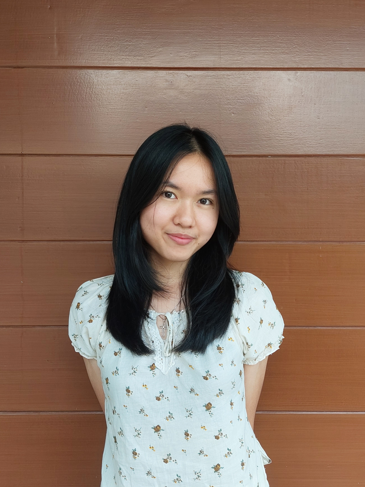

+62 851-5539-9231 | amanda.diyanti.putri@gmail.com | www.linkedin.com/in/amandadiyanti
Mahasiswa tahun kedua Sistem Informasi di Universitas Brawijaya dengan pengalaman di organisasi mahasiswa dan minat kuat di bidang IT. Antusias dengan UI/UX Design dan ingin belajar serta mendapatkan pengalaman di bidang tersebut. Memiliki semangat untuk mengeksplorasi interaksi manusia-teknologi dan meningkatkan kemudahan penggunaan teknologi bagi masyarakat.
Fakultas Ilmu Komputer, Sistem Informasi, IPK 3,93/4,00
Staf Fasilitator
Staf Hubungan Masyarakat
Staf Advokasi dan Kesejahteraan Mahasiswa
UI/UX Designer
UI/UX Designer
UI/UX Designer
Kepemimpinan, Komunikasi, Kerja Tim, Adaptabilitas, Kreativitas, Pemecahan Masalah, Manajemen Waktu, Manajemen Proyek, Berpikir Kritis
UI/UX Design (Pemula), Prototyping (Pemula), Copywriting
Figma, Canva, Maze
Indonesia (Native), Inggris (Intermediate)